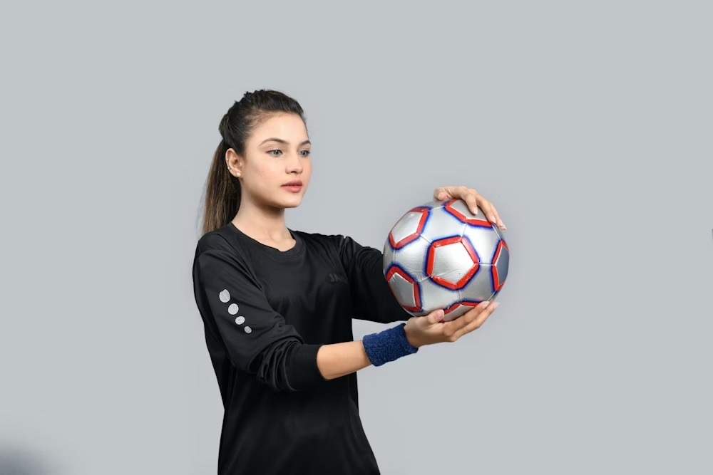
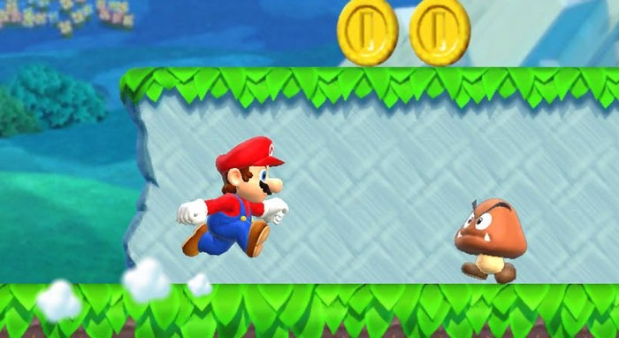
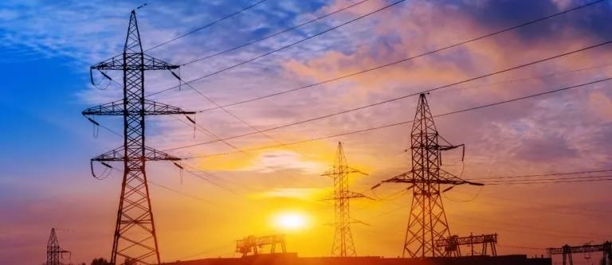
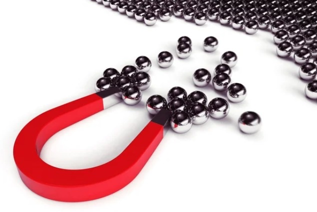

Contenido educativo sobre las formas de energía, transformaciones y energías limpias
👁️
Discapacidad Visual
Módulo adaptado con soporte de audio y descripciones detalladas
👂
Discapacidad Auditiva
Módulo adaptado con contenido visual, infografías y videos subtitulados
Selecciona un Indicador de Aprendizaje:
🔊 Controles de Lectura - Teoría
Atajos de teclado: A = Iniciar, S = Pausar, W = Reanudar, D = Detener. Estos atajos funcionan cuando no estás escribiendo en un campo de texto.
🔋 Indicador 1: Identificar las formas y transformaciones de la energía
¿Qué es la Energía?
La energía es la capacidad para realizar un trabajo. Hace posible que toda materia logre moverse o experimentar un cambio. En la vida cotidiana, la energía ha tomado gran importancia para las actividades humanas. Se mide en Julios (J) y Kilojulios (KJ).
⚖️ Ley de Conservación de la Energía
"La energía no puede crearse ni destruirse, solo se transforma."
Tipos Principales de Energía

⚡ Energía Potencial
Energía almacenada en los cuerpos en reposo. Depende de su masa, fuerza de gravedad y altura.

🏃 Energía Cinética
Energía de un cuerpo en movimiento. Todos los cuerpos en movimiento poseen energía cinética. Depende de la masa y velocidad.

💡 Energía Eléctrica
Se manifiesta en un movimiento de cargas eléctricas entre dos puntos determinados.
🧪 Energía Química
Se manifiesta en una reacción química, formada por el rompimiento o formación de enlaces químicos.
🔥 Energía Calórica
Se manifiesta por la combustión de la materia. Producto del aumento de temperatura.
🌋 Energía Geotérmica
Se manifiesta en un flujo de calor, producido a partir de procesos internos de la tierra.

🧲 Energía Magnética
Es producida por la atracción ejercida por la propiedad de los imanes.
🔬 Indicador 2: Avances científicos y tecnológicos
Explicar los avances científicos y tecnológicos relacionados con la aplicación de diversas formas de energía para el uso doméstico, industrial y la salud.
Aplicaciones de la Energía
La energía ha sido un gran avance para la vida humana, abarcando el campo de la industria, medicina, el doméstico y otros, facilitando la vida del ser humano.
🏠 Uso Doméstico
Energía Eléctrica: Permite el funcionamiento de aparatos electrónicos como celulares, computadoras facilitando la comunicación.
Energía Calórica: Aplicación en calefacción y producción de alimentos.
🏭 Uso Industrial
Energía Química: Esencial en automóviles, aviones y barcos. Producto de la combustión de leña, carbón o petróleo.
Energía Calórica: Secado y lavado de producciones industriales.
🏥 Uso en Salud
Energía Magnética: Resonancia magnética (RM) para imágenes del cuerpo sin procedimientos invasivos.
Energía Eléctrica: Fabricación de medicamentos, radioterapia, esterilización de material quirúrgico.
🌍 Energía Geotérmica
Fuente de energía limpia y sostenible, aprovecha el calor interno de la Tierra para generar electricidad y calefacción. Contribuye al desarrollo de tecnologías respetuosas con el ambiente.
🌱 Indicador 3: Energías limpias o amigables con el ambiente
Valorar el uso de energías limpias o amigables con el ambiente que contribuyan con el desarrollo de las actividades económicas del país y el cuidado del planeta.
¿Qué son las Energías Limpias?
Se consideran energías limpias a las nuevas formas de transformación de energías que tienen como objetivo cuidar el ambiente, reconociendo el impacto medioambiental de la obtención de energías.
✅ Energías Renovables
Se obtienen de fuentes naturales que se regeneran
Reservas ilimitadas e inagotables
Energía sostenible a largo plazo
Ejemplos: Solar, eólica, geotérmica, biomasa
❌ Energías No Renovables
Fuentes que no se regeneran y se pueden agotar
Reservas reducidas y limitadas
No es sostenible a largo plazo
Ejemplos: Petróleo, carbón, gas natural, energía nuclear
🇨🇷 Principales Energías Limpias de Costa Rica
🌋 Energía Geotérmica
Aprovecha el calor interno de la tierra por medio de gases a altas temperaturas.
💨 Energía Eólica
Proviene del movimiento del viento, obtenida por medio de un aerogenerador.
☀️ Energía Solar
Se obtiene de la luz solar en forma de radiación electromagnética.
🌋 Energía Geotérmica
Aprovecha el calor interno de la tierra por medio de gases a altas temperaturas.
🌿 Biomasa
Energía obtenida a partir de materia orgánica.
👁️ Configuración - Discapacidad Visual
📝 Nota para el Docente
Por favor, ayude al estudiante a completar los siguientes datos. Es importante que todos los campos sean llenados antes de continuar.
📱 Selecciona el dispositivo que vas a usar:
💻
Computadora
Atajos de teclado
📱
Celular/Tablet
Botones táctiles
👂 Configuración - Discapacidad Auditiva
📱 Selecciona el dispositivo que vas a usar:
💻
Computadora
Pantalla grande
📱
Celular/Tablet
Táctil
👁️ Módulo para Discapacidad Visual
Estudiante: | Sección:
1️⃣ Preparación Inicial
Configuración del Entorno.
El profesor te ayudará a iniciar ChatGPT.
Asegúrate de que la función de voz o el lector de pantalla esté activado.
Confirma que el audio se escuche con claridad.
Materiales Necesarios,
Documento que contenga la información.
Dispositivo con audio en funcionamiento.
Grabadora para tomar notas (opcional).
2️⃣ Indicador 1: Formas y Transformaciones de Energía
Prompt para la IA:
Copia y pega este texto en ChatGPT:
Hola ChatGPT, soy [Nombre] un estudiante con discapacidad visual. Necesito que me ayudes a estudiar el tema "La energía" del módulo de octavo año de Ciencias Naturales. Por favor, respóndeme en formato de voz (modo hablante) y utiliza un tono amable, claro y con pausas para que pueda seguirte fácilmente.
Ayúdame de la siguiente manera:
1. Lectura guiada y explicaciones
- Lee y explícame con tus palabras el contenido sobre La energía.
- Explica qué significa energía y cómo se mide (Julios y Kilojulios).
- Describe las formas de energía: potencial, cinética, eléctrica, química, calórica, geotérmica y magnética.
- Explica también la Ley de conservación de la energía con un ejemplo de la vida cotidiana.
- Termina esta parte con un resumen sencillo para reforzar lo aprendido.
- Dame comparaciones y ejemplos cotidianos para entender mejor cada tipo de energía. Por ejemplo: "La energía potencial es como…" o "La energía cinética se parece a…". Usa ejemplos que pueda imaginar auditivamente: sonidos, acciones o situaciones diarias.
2. Preguntas para repasar
Hazme preguntas orales para comprobar si entendí. Incluye:
- Preguntas de respuesta corta
- Preguntas para completar frases
- Una o dos preguntas de razonamiento
Espera mis respuestas antes de continuar y corrígeme si me equivoco, con una breve explicación hablada.
Recuerda hablarme en voz, despacio y con lenguaje claro. El objetivo es ayudarme a comprender las formas y transformaciones de la energía en la vida diaria.
Identifico las unidades del Sistema Internacional para medir la energía
Resolví todas mis dudas
Completé la evaluación
Obtuve el resumen final
3️⃣ Indicador 2: Avances Científicos y Tecnológicos
Prompt para la IA
Copia y pega este texto en ChatGPT:
Hola ChatGPT, soy [Nombre], un estudiante con discapacidad visual. Necesito que me ayudes a estudiar el tema "Avances científicos y tecnológicos relacionados con la energía" del módulo de octavo año de Ciencias Naturales.
Por favor, respóndeme en formato de voz (modo hablante), usando un tono amable, claro y con pausas, para que pueda comprenderte fácilmente.
Ayúdame de la siguiente manera:
1. Lectura guiada y explicaciones
- Explica cómo la energía ha sido un avance para la vida humana en la industria, medicina y uso doméstico
- Describe los avances científicos y tecnológicos en:
* Uso doméstico (energía eléctrica, calórica)
* Uso industrial (energía química, calórica)
* Uso en salud (energía magnética en resonancia magnética, radioterapia)
* Energía geotérmica como fuente limpia
- Usa ejemplos que pueda imaginar con sonidos, acciones o situaciones de la vida diaria
2. Ejemplos auditivos o cotidianos
Da ejemplos que yo pueda imaginar con sonidos o acciones, como encender una lámpara, el sonido de un hospital, una fábrica funcionando.
3. Resumen final
Al terminar, hazme un resumen sencillo y corto para reforzar lo aprendido.
Comprendí las principales formas de energía: calórica, química, eléctrica, magnética y geotérmica
Identifiqué ejemplos de cómo cada tipo de energía se aplica en la vida cotidiana y en la industria
Reconocí los avances científicos y tecnológicos que han surgido a partir del uso de diferentes energías
Puedo explicar cómo las diversas formas de energía contribuyen al bienestar y la salud humana
Completé la evaluación y resolví mis dudas
4️⃣ Indicador 3: Energías Limpias y Ambiente
Prompt para la IA
Copia y pega este texto en ChatGPT:
Hola ChatGPT, soy [Nombre], un estudiante con discapacidad visual. Necesito que me ayudes a estudiar el tema "Las energías limpias y su importancia para el ambiente" del módulo de octavo año de Ciencias Naturales.
Por favor, respóndeme en formato de voz (modo hablante), usando un tono amable, claro y con pausas, para que pueda comprenderte fácilmente.
Ayúdame de la siguiente manera:
1. Lectura guiada y explicaciones
- Léeme y explícame con tus palabras qué son las energías limpias o amigables con el ambiente
- Explica la diferencia entre energías renovables y no renovables
- Describe las principales formas de energías renovables: solar, eólica, hidroeléctrica, geotérmica y biomasa, usando ejemplos que pueda imaginar con sonidos, acciones o situaciones de la vida diaria
- Explica las energías no renovables como petróleo, carbón, gas natural y energía nuclear, diciendo por qué no son sostenibles y qué problemas causan al ambiente
- Menciona las principales energías limpias de Costa Rica
2. Ejemplos auditivos o cotidianos
Da ejemplos que yo pueda imaginar con sonidos o acciones, como: "La energía solar la usamos cuando…", "La energía eólica funciona cuando el viento…"
3. Resumen final
Al terminar, hazme un resumen sencillo y corto para reforzar lo aprendido.
Identifiqué las energías renovables y no renovables
Reconocí las principales energías limpias de Costa Rica
Puedo debatir las diferencias y similitudes de las energías renovables y no renovables
Completé la evaluación y resolví mis dudas
5️⃣ Mis Notas y Reflexión
💭 Preguntas para tu reflexión:
¿Qué fue lo que más te llamó la atención sobre el tema de la energía?
¿Qué parte te resultó más fácil o más difícil de entender?
¿Qué ejemplos te ayudaron más a comprender las diferencias entre las formas de energía?
👨🏫 Evaluación para el Docente
📋 Prompt para Evaluación del Docente
Copie y pegue este prompt en ChatGPT para evaluar el desempeño del estudiante:
Hola ChatGPT, soy docente de octavo año y necesito que me ayudes a evaluar la interacción del estudiante con discapacidad visual que utilizó tu asistencia para estudiar el tema "formas y transformaciones de la energía".
Por favor, realiza una evaluación formativa completa, estructurada en los siguientes apartados:
1. Resumen general de la interacción
- Realiza un resumen completo del diálogo o actividad que el estudiante mantuvo contigo
- Describe brevemente cómo se desarrolló la sesión: introducción, explicaciones, ejemplos, participación, preguntas y reflexiones
- Señala si el estudiante logró mantener una comunicación activa, clara y coherente
- Evalúa el nivel de comprensión y participación del estudiante usando una escala (incluye tu rúbrica si tienes una)
- Incluye una breve justificación de la calificación
2. Reflexión sobre el tema
- Analiza si el estudiante logró reflexionar sobre el tema de la energía, su importancia y aplicación en la vida cotidiana
3. Expresión y actitud
- Evalúa cómo se expresó el estudiante: uso de lenguaje, claridad verbal, capacidad para argumentar
- Considera su actitud hacia el aprendizaje, su disposición para participar y su aprovechamiento del apoyo de la IA
4. Recomendaciones para el docente
Ofrece sugerencias personalizadas que ayuden al docente a fortalecer el aprendizaje del estudiante:
- Estrategias para reforzar contenidos de energía
- Actividades adicionales (auditivas o experimentales)
- Recomendaciones para mejorar la comprensión o la interacción en futuras sesiones con IA
El docente te brindará ayuda para iniciar ChatGPT.
Asegúrese de que la pantalla esté lista para leer todo el contenido.
Confirma que los textos, subtítulos o mensajes de ChatGPT se vean con claridad.
Materiales Necesarios.
Documento que contenga la información.
Dispositivo móvil (Computadora, Celular, Tablet).
Ten un cuaderno o archivo digital para tomar apuntes (opcional).
2️⃣ Indicador 1: Formas y Transformaciones de Energía
Prompt para la IA
Copia y pega este texto en ChatGPT:
Hola ChatGPT, soy [Nombre] un estudiante con discapacidad auditiva. Necesito que me ayudes a estudiar el tema "La energía" del módulo de octavo año de Ciencias Naturales. Para ello requiero material audiovisual que me permita una buena comprensión del tema, y poder identificar las formas y transformaciones de la energía en diferentes actividades, que se realizan en la vida diaria.
1. Recolección de información:
Brinda información sobre el tema considerando los siguientes puntos:
- Definición general de energía, tipos, sus transformaciones
- Ejemplos de la cotidianidad de las formas de energía
- Videos con subtítulos: Proporciona enlaces a videos educativos que expliquen el tema, asegurándote de que cuenten con subtítulos claros y legibles
- Lengua de Señas: Si es posible, incluye videos en Lengua de Señas que expliquen el tema de manera detallada
- Resumen escrito: Elabora un resumen escrito que explique las formas y transformaciones de la energía, utilizando un lenguaje claro y sencillo
- Brinda fuentes confiables
2. Infografía
Genera una infografía visual que incluya:
- Tipos de energía con iconos
- Ejemplos cotidianos
- Transformaciones de energía
- Usa colores distintivos para cada tipo
🎨 Actividad: Crea tu Infografía sobre un Tipo de Energía
Selecciona un tipo de energía: solar, eólica, hidráulica, térmica, etc.
Investiga con ChatGPT: Pide ayuda para resumir datos importantes (definición, usos, ventajas, desventajas, ejemplos)
Genera un esquema: Organiza la información en: título, secciones principales y subtemas
Diseña la infografía: Define colores, tipografía, iconos. Pide sugerencias a ChatGPT
Lista de Verificación - Indicador 1
Comprendí qué es la energía
Distingo la energía potencial y energía cinética
Puedo detallar los diferentes tipos de energías
Identifico las unidades del Sistema Internacional para medir la energía
Resolví todas mis dudas
Completé la evaluación
Diseñé una infografía
3️⃣ Indicador 3: Energías Limpias
Prompt para la IA
Copia y pega este texto en ChatGPT:
Hola ChatGPT, soy [Nombre] un estudiante con discapacidad auditiva. Necesito que me ayudes a estudiar el tema "Energías limpias" del módulo de octavo año de Ciencias Naturales.
1. Recolección de información:
- Definición general de energías limpias o amigables con el ambiente, explicando su importancia para el desarrollo sostenible y el cuidado del planeta
- Analizar cómo contribuyen las energías limpias al desarrollo de las actividades económicas del país (agricultura, industria, transporte, turismo)
- Videos con subtítulos: Proporciona enlaces a videos educativos sobre energías renovables
- Lengua de Señas: Si es posible, incluye videos en Lengua de Señas
- Resumen escrito: Elabora un resumen claro sobre energías renovables vs no renovables
2. Autoevaluación
Genera una evaluación al nivel de octavo año que incluya:
- 12 preguntas de selección única aproximadamente
- Correspondencia (pareo)
- Cinco preguntas de respuesta corta
- Dos preguntas de respuesta construida
Crea una infografía sobre una ciudad costarricense que funcione solo con energías limpias
Imagina tu ciudad: Incluye paneles solares, turbinas eólicas, transporte eléctrico, zonas verdes, ríos limpios
Investiga con ChatGPT:
¿Qué tipos de energía limpia se usan en Costa Rica?
¿Cómo benefician al ambiente y la economía?
¿Qué tecnologías limpias existen?
Genera un esquema: Secciones como energía limpia, transporte sostenible, economía verde, naturaleza
Diseña tu infografía: Usa colores, iconos e imágenes representativas
4️⃣ Mis Notas y Reflexión
👨🏫 Evaluación para el Docente
📋 Prompt para Evaluación del Docente
Copie y pegue este prompt en ChatGPT para evaluar el desempeño del estudiante:
Hola ChatGPT, soy docente de octavo año y necesito que me ayudes a evaluar la interacción del estudiante con discapacidad auditiva que utilizó tu asistencia para estudiar el tema "formas y transformaciones de la energía".
Por favor, realiza una evaluación formativa completa, estructurada en los siguientes apartados:
1. Resumen general de la interacción
- Realiza un resumen completo del diálogo o actividad que el estudiante mantuvo contigo
- Describe brevemente cómo se desarrolló la sesión
- Señala si el estudiante logró mantener una comunicación activa, clara y coherente
- Evalúa el nivel de comprensión y participación usando una escala
- Incluye una breve justificación de la calificación
2. Reflexión sobre el tema
- Analiza si el estudiante logró reflexionar sobre el tema de la energía, su importancia y aplicación
3. Expresión y actitud
- Evalúa cómo se expresó el estudiante: uso de lenguaje, claridad, capacidad para argumentar
- Considera su actitud hacia el aprendizaje y aprovechamiento del apoyo de la IA
4. Recomendaciones para el docente
- Estrategias para reforzar contenidos de energía
- Actividades adicionales visuales o experimentales
- Recomendaciones para mejorar la interacción en futuras sesiones